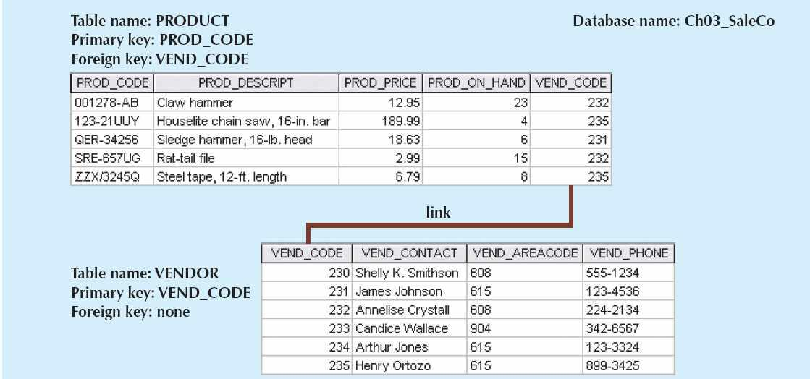
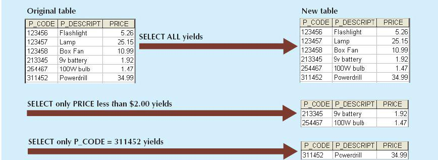
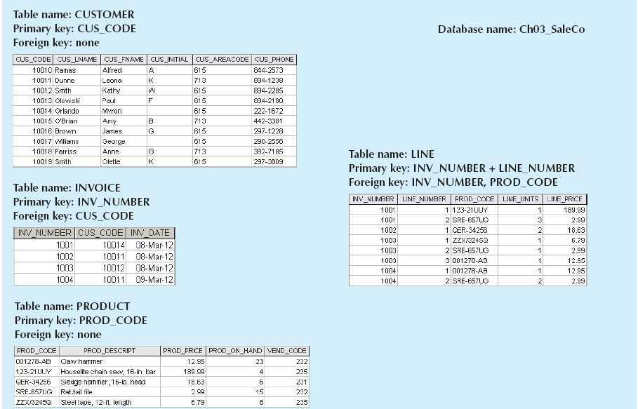

That the relational database model offers a logical view of data
That the relational database model offers a logical view of data3 THE RELATIONAL DATABASE MODEL
In this chapter, you will learn:
That the relational database model offers a logical view of data
About the relational model’s basic component: relations
That relations are logical constructs composed of rows (tuples) and columns (attributes)
That relations are implemented as tables in a relational DBMS
About relational database operators, the data dictionary, and the system catalog
How data redundancy is handled in the relational database model
Why indexing is important
Preview
In Chapter 2, Data Models, you learned that the relational data model’s structural and data independence allow you to examine the model’s logical structure without considering the physical aspects of data storage and retrieval. You also learned that entity relationship diagrams (ERDs) may be used to depict entities and their relationships graphically. In this chapter, you will learn some important details about the relational model’s logical structure and more about how the ERD can be used to design a relational database.
You will also learn how the relational database’s basic data components fit into a logical construct known as a table. You will discover that one important reason for the relational database model’s simplicity is that its tables can be treated as logical units rather than physical units. You will also learn how the independent tables within the database can be related to one another.
After learning about tables, their components, and their relationships, you will be introduced to the basic concepts that shape the design of tables. Because the table is such an integral part of relational database design, you will also learn the characteristics of well-designed and poorly designed tables.
Finally, you will be introduced to some basic concepts that will become your gateway to the next few chapters. For example, you will examine different kinds of relationships and the way they might be handled in the relational database environment.
NOTE
The relational model, introduced by E. F. Codd in 1970, is based on predicate logic and set theory. Predicate logic, used extensively in mathematics, provides a framework in which an assertion (statement of fact) can be verified as either true or false. For example, suppose that a student with a student ID of 12345678 is named Melissa Sanduski. This assertion can easily be demonstrated to be true or false. Set theory is a mathematical science that deals with sets, or groups of things, and is used as the basis for data manipulation in the relational model. For example, assume that set A contains three numbers: 16, 24, and 77. This set is represented as A(16, 24, 77). Furthermore, set B contains four numbers: 44, 77, 90, and 11, and so is represented as B(44, 77, 90, 11). Given this information, you can conclude that the intersection of A and B yields a result set with a single number, 77. This result can be expressed as A ∩ B = 77. In other words, A and B share a common value, 77.
Based on these concepts, the relational model has three well-defined components:
1. A logical data structure represented by relations (see Sections 3.1, 3.2, and 3.5).
2. A set of integrity rules to enforce that the data are and remain consistent over time (see Sections 3.3, 3.6, 3.7, and 3.8).
3. A set of operations that defines how data are manipulated (see Section 3.4).
In Chapter 1, Database Systems, you learned that a database stores and manages both data and metadata. You also learned that the DBMS manages and controls access to the data and the database structure. Such an arrangement—placing the DBMS between the application and the database—eliminates most of the file system’s inherent limitations. The result of such flexibility, however, is a far more complex physical structure. In fact, the database structures required by both the hierarchical and network database models often become complicated enough to diminish efficient database design. The relational data model changed all of that by allowing the designer to focus on the logical representation of the data and its relationships, rather than on the physical storage details. To use an automotive analogy, the relational database uses an automatic transmission to relieve you of the need to manipulate clutch pedals and gearshifts. In short, the relational model enables you to view data logically rather than physically.
The practical significance of taking the logical view is that it serves as a reminder of the simple file concept of data storage. Although the use of a table, quite unlike that of a file, has the advantages of structural and data independence, a table does resemble a file from a conceptual point of view. Because you can think of related records as being stored in independent tables, the relational database model is much easier to understand than the hierarchical and network models. Logical simplicity tends to yield simple and effective database design methodologies.
Because the table plays such a prominent role in the relational model, it deserves a closer look. Therefore, our discussion begins by exploring the details of table structure and contents.
3.1.1 TABLES AND THEIR CHARACTERISTICS
The logical view of the relational database is facilitated by the creation of data relationships based on a logical construct known as a relation. Because a relation is a mathematical construct, end users find it much easier to think of a relation as a table. A table is perceived as a two-dimensional structure composed of rows and columns. A table is also called a relation because the relational model’s creator, E. F. Codd, used the two terms as synonyms. You can think of a table as a persistent representation of a logical relation—that is, a relation whose contents can be permanently saved for future use. As far as the table’s user is concerned, a table contains a group of related entity occurrences—that is, an entity set. For example, a STUDENT table contains a collection of entity occurrences, each representing a student. For that reason, the terms entity set and table are often used interchangeably.
NOTE
The word relation, also known as a dataset in Microsoft Access, is based on the mathematical set theory from which Codd derived his model. Because the relational model uses attribute values to establish relationships among tables, many database users incorrectly assume that the term relation refers to such relationships. Many then incorrectly conclude that only the relational model permits the use of relationships.
You will discover that the table view of data makes it easy to spot and define entity relationships, thereby greatly simplifying the task of database design. The characteristics of a relational table are summarized in Table 3.1.
TABLE 3.1 Characteristics of a Relational Table
1 | A table is perceived as a two-dimensional structure composed of rows and columns. |
2 | Each table row (tuple) represents a single entity occurrence within the entity set. |
3 | Each table column represents an attribute, and each column has a distinct name. |
4 | Each intersection of a row and column represents a single data value. |
5 | All values in a column must conform to the same data format. |
6 | Each column has a specific range of values known as the attribute domain. |
7 | The order of the rows and columns is immaterial to the DBMS. |
8 | Each table must have an attribute or combination of attributes that uniquely identifies each row. |
The table shown in Figure 3.1 illustrates the characteristics listed in Table 3.1.
FIGURE 3.1 STUDENT table attribute values
SOURCE: Course Technology/Cengage Learning
NOTE
Relational database terminology is very precise. Unfortunately, file system terminology sometimes creeps into the database environment. Thus, rows are sometimes referred to as records and columns are sometimes labeled as fields. Occasionally, tables are labeled files. Technically speaking, this substitution of terms is not always appropriate; the database table is a logical concept rather than a physical concept, and the terms file, record, and field describe physical concepts. Nevertheless, as long as you recognize that the table is actually a logical concept rather than a physical construct, you may think of table rows as records and of table columns as fields. In fact, many database software vendors still use this familiar file system terminology.
 ONLINE CONTENT
ONLINE CONTENT
All of the databases used to illustrate the material in this chapter are available at www.cengagebrain.com. The database names used in the folder match the database names used in the figures. For example, the source of the tables shown in Figure 3.1 is the Ch03_TinyCollege database.
Using the STUDENT table shown in Figure 3.1, you can draw the following conclusions corresponding to the points in Table 3.1:
1. The STUDENT table is perceived to be a two-dimensional structure composed of eight rows (tuples) and 12 columns (attributes).
2. Each row in the STUDENT table describes a single entity occurrence within the entity set. (The entity set is represented by the STUDENT table.) For example, row 4 in Figure 3.1 describes a student named Walter H. Oblonski. Given the table contents, the STUDENT entity set includes eight distinct entities (rows), or students.
3. Each column represents an attribute, and each column has a distinct name.
4. All of the values in a column match the attribute’s characteristics. For example, the grade point average (STU_GPA) column contains only STU_GPA entries for each of the table rows. Data must be classified according to their format and function. Although various DBMSs can support different data types, most support at least the following:
a. Numeric. You can use numeric data to perform meaningful arithmetic procedures. For example, in Figure 3.1, STU_HRS and STU_GPA are numeric attributes.
b. Character. Character data, also known as text data or string data, can contain any character or symbol not intended for mathematical manipulation. In Figure 3.1, STU_CLASS and STU_PHONE are examples of character attributes.
c. Date. Date attributes contain calendar dates stored in a special format known as the Julian date format. In Figure 3.1, STU_DOB is a date attribute.
d. Logical. Logical data can only have true or false (yes or no) values. In Figure 3.1, the STU_TRANSFER attribute uses a logical data format.
5. The column’s range of permissible values is known as its domain. Because the STU_GPA values are limited to the range 0–4, inclusive, the domain is [0,4].
6. The order of rows and columns is immaterial to the user.
7. Each table must have a primary key. In general terms, the primary key (PK) is an attribute or combination of attributes that uniquely identifies any given row. In this case, STU_NUM (the student number) is the primary key. Using the data in Figure 3.1, observe that a student’s last name (STU_LNAME) would not be a good primary key because several students have the last name of Smith. Even the combination of the last name and first name (STU_FNAME) would not be an appropriate primary key because more than one student is named John Smith.
In the relational model, keys are important because they are used to ensure that each row in a table is uniquely identifiable. They are also used to establish relationships among tables and to ensure the integrity of the data. A key consists of one or more attributes that determine other attributes. For example, an invoice number identifies all of the invoice attributes, such as the invoice date and the customer name.
One type of key, the primary key, has already been introduced. Given the structure of the STUDENT table shown in Figure 3.1, defining and describing the primary key seem simple enough. However, because the primary key plays such an important role in the relational environment, you will examine the primary key’s properties more carefully. In this section, you also will become acquainted with superkeys, candidate keys, and secondary keys.
The role of a key is based on the concept of determination. Determination is the state in which knowing the value of one attribute makes it possible to determine the value of another. The idea of determination is not unique to the database environment. You are familiar with the formula revenue – cost = profit. This is a form of determination, because if you are given the revenue and the cost, you can determine the profit. Given profit and revenue, you can determine the cost. Given any two values, you can determine the third. Determination in a database environment, however, is not normally based on a formula but on the relationships among the attributes.
If you consider what the attributes of the STUDENT table in Figure 3.1 actually represent, you will see a relationship among the attributes. If you are given a value for STU_NUM, then you can determine the value for STU_LNAME because one and only one value of STU_LNAME is associated with any given value of STU_NUM. A specific terminology and notation is used to describe relationships based on determination. The relationship is called functional dependence, which means that the value of one or more attributes determines the value of one or more other attributes. The standard notation for representing the relationship between STU_NUM and STU_LNAME is:
STU_NUM → STU_LNAME
In this functional dependency, the attribute whose value determines another is called the determinant or the key. The attribute whose value is determined by the other attribute is called the dependent. Using this terminology, it would be correct to say that STU_NUM is the determinant and STU_LNAME is the dependent. STU_NUM functionally determines STU_LNAME, and STU_LNAME is functionally dependent on STU_NUM. As stated earlier, functional dependence can involve a determinant that comprises more than one attribute and multiple dependent attributes. Refer to the STUDENT table for the following example:
STU_NUM → (STU_LNAME, STU_FNAME, STU_GPA)
and
(STU_FNAME, STU_LNAME, STU_INIT, STU_PHONE) → (STU_DOB, STU_HRS, STU_GPA)
Determinants made of more than one attribute require special consideration. It is possible to have a functional dependency in which the determinant contains attributes that are not necessary for the relationship. Consider the following two functional dependencies:
STU_NUM → STU_GPA
(STU_NUM, STU_LNAME) → STU_GPA
In the second functional dependency, the determinant includes STU_LNAME, but this attribute is not necessary for the relationship. The functional dependency is valid because given a pair of values for STU_NUM and STU_LNAME, only one value would occur for STU_GPA. A more specific term, full functional dependence, is used to refer to functional dependencies in which the entire collection of attributes in the determinant is necessary for the relationship. Therefore, the dependency shown in the preceding example is a functional dependency, but not a full functional dependency.
Recall that a key is an attribute or group of attributes that can determine the values of other attributes. Therefore, keys are determinants in functional dependencies. Several different types of keys are used in the relational model, and you need to be familiar with them.
A composite key is a key that is composed of more than one attribute. An attribute that is a part of a key is called a key attribute. For example:
STU_NUM → STU_GPA
(STU_LNAME, STU_FNAME, STU_INIT, STU_PHONE) → STU_HRS
In the first functional dependency, STU_NUM is an example of a key composed of only one key attribute. In the second functional dependency, (STU_LNAME, STU_FNAME, STU_INIT, STU_PHONE) is a composite key composed of four key attributes.
A superkey is a key that can uniquely identify any row in the table. In other words, a superkey functionally determines every attribute in the row. In the STUDENT table, STU_NUM is a superkey, as are the composite keys (STU_NUM, STU_LNAME), (STU_NUM, STU_LNAME, STU_INIT), and (STU_LNAME, STU_FNAME, STU_INIT, STU_PHONE). In fact, because STU_NUM alone is a superkey, any composite key that has STU_NUM as a key attribute will also be a superkey. Be careful, however, because not all keys are superkeys. For example, Gigantic State University determines its student classification based on hours completed, as shown in Table 3.2.
TABLE 3.2 Student Classification
HOURS COMPLETED | CLASSIFICATION |
Less than 30 | Fr |
30–59 | So |
60–89 | Jr |
90 or more | Sr |
Therefore, you can write STU_HRS → STU_CLASS.
However, the specific number of hours is not dependent on the classification. It is quite possible to find a junior with 62 completed hours or one with 84 completed hours. In other words, the classification (STU_CLASS) does not determine one and only one value for completed hours (STU_HRS).
One specific type of superkey is called a candidate key. A candidate key is a minimal superkey—that is, a superkey without any unnecessary attributes. A candidate key is based on a full functional dependency. For example, STU_NUM would be a candidate key, as would (STU_LNAME, STU_FNAME, STU_INIT, STU_PHONE). On the other hand, (STU_NUM, STU_LNAME) is a superkey, but it is not a candidate key because STU_LNAME could be removed and the key would still be a superkey. A table can have many different candidate keys. If the STUDENT table also included the students’ Social Security numbers as STU_SSN, then it would appear to be a candidate key. Candidate keys are called candidates because they are the eligible options from which the designer will choose when selecting the primary key. The primary key is the candidate key chosen to be the primary means by which the rows of the table are uniquely identified.
Entity integrity is the condition in which each row (entity instance) in the table has its own unique identity. To ensure entity integrity, the primary key has two requirements: (1) all of the values in the primary key must be unique, and (2) no key attribute in the primary key can contain a null.
NOTE
A null is no value at all. It does not mean a zero or a space. A null is created when you press the Enter key or the Tab key to move to the next entry without making an entry of any kind. Pressing the Spacebar creates a blank (or a space).
Null values are problematic in the relational model. A null is the absence of any data value, and it is never allowed in any part of the primary key. From a theoretical perspective, it can be argued that a table that contains a null is not properly a relational table at all. From a practical perspective, however, some nulls cannot be reasonably avoided. For example, not all students have a middle initial. As a general rule, nulls should be avoided as much as reasonably possible. In fact, an abundance of nulls is often a sign of a poor design. Also, nulls should be avoided in the database because their meaning is not always identifiable. For example, a null could represent:
• An unknown attribute value.
• A known, but missing, attribute value.
• A “not applicable” condition.
Depending on the sophistication of the application development software, nulls can create problems when functions such as COUNT, AVERAGE, and SUM are used. In addition, nulls can create logical problems when relational tables are linked.
In addition to its role in providing a unique identity to each row in the table, the primary key may play an additional role in the controlled redundancy that allows the relational model to work. Recall from Chapter 2 that a hallmark of the relational model is that relationships between tables are implemented through common attributes as a form of controlled redundancy. For example, Figure 3.2 shows PRODUCT and VENDOR tables that are linked through a common attribute, VEND_CODE. VEND_CODE is referred to as a foreign key in the PRODUCT table. A foreign key is the primary key of one table that has been placed into another table to create a common attribute. In Figure 3.2, the primary key of VENDOR, VEND_CODE, was placed in the PRODUCT table; therefore, VEND_CODE is a foreign key in PRODUCT. One advantage of using a proper naming convention for table attributes is that you can identify foreign keys more easily. For example, because the STUDENT table in Figure 3.1 used a proper naming convention, you can identify two foreign keys in the table (DEPT_CODE and PROF_NUM) that imply the existence of two other tables in the database (DEPARTMENT and PROFESSOR) related to STUDENT.
FIGURE 3.2 An example of a simple relational database

SOURCE: Course Technology/Cengage Learning
Just as the primary key has a role in ensuring the integrity of the database, so does the foreign key. Foreign keys are used to ensure referential integrity, the condition in which every reference to an entity instance by another entity instance is valid. In other words, every foreign key entry must either be null or a valid value in the primary key of the related table. Note that the PRODUCT table has referential integrity because every entry in VEND_CODE in the PRODUCT table is either null or a valid value in VEND_CODE in the VENDOR table. Every vendor referred to by a row in the PRODUCT table is a valid vendor.
Finally, a secondary key is defined as a key that is used strictly for data retrieval purposes. Suppose that customer data are stored in a CUSTOMER table in which the customer number is the primary key. Do you think that most customers will remember their numbers? Data retrieval for a customer is easier when the customer’s last name and phone number are used. In that case, the primary key is the customer number; the secondary key is the combination of the customer’s last name and phone number. Keep in mind that a secondary key does not necessarily yield a unique outcome. For example, a customer’s last name and home telephone number could easily yield several matches in which one family lives together and shares a phone line. A less efficient secondary key would be the combination of the last name and zip code; this could yield dozens of matches, which could then be combed for a specific match.
A secondary key’s effectiveness in narrowing down a search depends on how restrictive the key is. For instance, although the secondary key CUS_CITY is legitimate from a database point of view, the attribute values New York or Sydney are not likely to produce a usable return unless you want to examine millions of possible matches. (Of course, CUS_CITY is a better secondary key than CUS_COUNTRY.)
Table 3.3 summarizes the various relational database table keys.
TABLE 3.3 Relational Database Keys
KEY TYPE | DEFINITION |
Superkey | An attribute or combination of attributes that uniquely identifies each row in a table |
Candidate key | A minimal (irreducible) superkey; a superkey that does not contain a subset of attributes that is itself a superkey |
Primary key | A candidate key selected to uniquely identify all other attribute values in any given row; cannot contain null entries |
| Foreign key | An attribute or combination of attributes in one table whose values must either match the primary key in another table or be null |
| Secondary key | An attribute or combination of attributes used strictly for data retrieval purposes |
Relational database integrity rules are very important to good database design. RDBMSs enforce integrity rules automatically, but it is much safer to make sure your application design conforms to the entity and referential integrity rules mentioned in this chapter. Those rules are summarized in Table 3.4.
ENTITY INTEGRITY | DESCRIPTION |
Requirement | All primary key entries are unique, and no part of a primary key may be null. |
Purpose | Each row will have a unique identity, and foreign key values can properly reference primary key values. |
Example | No invoice can have a duplicate number, nor can it be null. In short, all invoices are uniquely identified by their invoice number. |
REFERENTIAL INTEGRITY | DESCRIPTION |
Requirement | A foreign key may have either a null entry, as long as it is not a part of its table’s primary key, or an entry that matches the primary key value in a table to which it is related. (Every non-null foreign key value must reference an existing primary key value.) |
Purpose | It is possible for an attribute not to have a corresponding value, but it will be impossible to have an invalid entry. The enforcement of the referential integrity rule makes it impossible to delete a row in one table whose primary key has mandatory matching foreign key values in another table. |
Example | A customer might not yet have an assigned sales representative (number), but it will be impossible to have an invalid sales representative (number). |
The integrity rules summarized in Table 3.4 are illustrated in Figure 3.3.
FIGURE 3.3 An illustration of integrity rules
SOURCE: Course Technology/Cengage Learning
Note the following features of Figure 3.3.
• Entity integrity. The CUSTOMER table’s primary key is CUS_CODE. The CUSTOMER primary key column has no null entries, and all entries are unique. Similarly, the AGENT table’s primary key is AGENT_CODE, and this primary key column is also free of null entries.
• Referential integrity. The CUSTOMER table contains a foreign key, AGENT_CODE, that links entries in the CUSTOMER table to the AGENT table. The CUS_CODE row identified by the (primary key) number 10013 contains a null entry in its AGENT_CODE foreign key because Paul F. Olowski does not yet have a sales representative assigned to him. The remaining AGENT_CODE entries in the CUSTOMER table all match the AGENT_CODE entries in the AGENT table.
To avoid nulls, some designers use special codes, known as flags, to indicate the absence of some value. Using Figure 3.3 as an example, the code -99 could be used as the AGENT_CODE entry in the fourth row of the CUSTOMER table to indicate that customer Paul Olowski does not yet have an agent assigned to him. If such a flag is used, the AGENT table must contain a dummy row with an AGENT_CODE value of -99. Thus, the AGENT table’s first record might contain the values shown in Table 3.5.
TABLE 3.5 A Dummy Variable Value Used as a Flag
Chapter 4, Entity Relationship (ER) Modeling, discusses several ways to handle nulls.
Other integrity rules that can be enforced in the relational model are the NOT NULL and UNIQUE constraints. The NOT NULL constraint can be placed on a column to ensure that every row in the table has a value for that column. The UNIQUE constraint is a restriction placed on a column to ensure that no duplicate values exist for that column.
The data in relational tables are of limited value unless the data can be manipulated to generate useful information. This section describes the basic data manipulation capabilities of the relational model. Relational algebra defines the theoretical way of manipulating table contents using the eight relational operators: SELECT, PROJECT, JOIN, INTERSECT, UNION, DIFFERENCE, PRODUCT, and DIVIDE. In Chapter 7, Introduction to Structured Query Language (SQL), and Chapter 8, Advanced SQL, you will learn how SQL commands can be used to accomplish relational algebra operations.
NOTE
The degree of relational completeness can be defined by the extent to which relational algebra is supported. To be considered minimally relational, the DBMS must support the key relational operators SELECT, PROJECT, and JOIN. Very few DBMSs can support all eight relational operators.
The relational operators have the property of closure; that is, the use of relational algebra operators on existing relations (tables) produces new relations. There is no need to examine the mathematical definitions, properties, and characteristics of relational algebra operators. However, their use can easily be illustrated as follows:
1. SELECT, also known as RESTRICT, yields values for all rows found in a table that satisfy a given condition. SELECT can be used to list all of the row values, or it can yield only row values that match a specified criterion. In other words, SELECT yields a horizontal subset of a table. The effect of a SELECT operation is shown in Figure 3.4.
2. PROJECT yields all values for selected attributes. In other words, PROJECT yields a vertical subset of a table. The effect of a PROJECT operation is shown in Figure 3.5.

SOURCE: Course Technology/Cengage Learning
SOURCE: Course Technology/Cengage Learning
3. UNION combines all rows from two tables, excluding duplicate rows. To be used in the UNION, the tables must have the same attribute characteristics; in other words, the columns and domains must be compatible. When two or more tables share the same number of columns, and when their corresponding columns share the same or compatible domains, they are said to be union-compatible. The effect of a UNION operation is shown in Figure 3.6.
4. INTERSECT yields only the rows that appear in both tables. As with UNION, the tables must be union-compatible to yield valid results. For example, you cannot use INTERSECT if one of the attributes is numeric and one is character-based. The effect of an INTERSECT operation is shown in Figure 3.7.
SOURCE: Course Technology/Cengage Learning
SOURCE: Course Technology/Cengage Learning
5. DIFFERENCE yields all rows in one table that are not found in the other table; that is, it subtracts one table from the other. As with UNION, the tables must be union-compatible to yield valid results. The effect of a DIFFERENCE operation is shown in Figure 3.8. However, note that subtracting the first table from the second table is not the same as subtracting the second table from the first table.
SOURCE: Course Technology/Cengage Learning
6. PRODUCT yields all possible pairs of rows from two tables—also known as the Cartesian product. Therefore, if one table has six rows and the other table has three rows, the PRODUCT yields a list composed of 6 × 3 = 18 rows. The effect of a PRODUCT operation is shown in Figure 3.9.
7. JOIN allows information to be combined from two or more tables. JOIN is the real power behind the relational database, allowing the use of independent tables linked by common attributes. The CUSTOMER and AGENT tables shown in Figure 3.10 will be used to illustrate several types of joins.
SOURCE: Course Technology/Cengage Learning
FIGURE 3.10 Two tables that will be used in join illustrations

SOURCE: Course Technology/Cengage Learning
A natural join links tables by selecting only the rows with common values in their common attribute(s). A natural join is the result of a three-stage process:
a. First, a PRODUCT of the tables is created, yielding the results shown in Figure 3.11.
b. Second, a SELECT is performed on the output of Step a to yield only the rows for which the AGENT_CODE values are equal. The common columns are referred to as the join columns. Step b yields the results shown in Figure 3.12.
c. A PROJECT is performed on the results of Step b to yield a single copy of each attribute, thereby eliminating duplicate columns. Step c yields the output shown in Figure 3.13.
The final outcome of a natural join yields a table that does not include unmatched pairs and provides only the copies of the matches.
Note a few crucial features of the natural join operation:
• If no match is made between the table rows, the new table does not include the unmatched row. In that case, neither AGENT_CODE 421 nor the customer whose last name is Smithson is included. Smithson’s AGENT_CODE 421 does not match any entry in the AGENT table.
• The column on which the join was made—that is, AGENT_CODE—occurs only once in the new table.
• If the same AGENT_CODE were to occur several times in the AGENT table, a customer would be listed for each match. For example, if the AGENT_CODE 167 occurred three times in the AGENT table, the customer named Rakowski would also occur three times in the resulting table because Rakowski is associated with AGENT_CODE 167. (Of course, a good AGENT table cannot yield such a result because it would contain unique primary key values.)
FIGURE 3.11 Natural join, Step 1: PRODUCT
SOURCE: Course Technology/Cengage Learning
FIGURE 3.12 Natural join, Step 2: SELECT
SOURCE: Course Technology/Cengage Learning
FIGURE 3.13 Natural join, Step 3: PROJECT
SOURCE: Course Technology/Cengage Learning
Another form of join, known as an equijoin, links tables on the basis of an equality condition that compares specified columns of each table. The outcome of the equijoin does not eliminate duplicate columns, and the condition or criterion used to join the tables must be explicitly defined. In fact, the result of an equijoin looks just like the outcome shown in Figure 3.12 for step 2 of a natural join. The equijoin takes its name from the equality comparison operator (=) used in the condition. If any other comparison operator is used, the join is called a theta join.
Each of the preceding joins is often classified as an inner join. An inner join only returns matched records from the tables that are being joined. In an outer join, the matched pairs would be retained, and any unmatched values in the other table would be left null. It is an easy mistake to think that an outer join is the opposite of an inner join. However, it is more accurate to think of an outer join as an “inner join plus.” The outer join still returns all of the matched records that the inner join returns, plus it returns the unmatched records from one of the tables. More specifically, if an outer join is produced for tables CUSTOMER and AGENT, two scenarios are possible:
A left outer join yields all of the rows in the CUSTOMER table, including those that do not have a matching value in the AGENT table. An example of such a join is shown in Figure 3.14.
SOURCE: Course Technology/Cengage Learning
A right outer join yields all of the rows in the AGENT table, including those that do not have matching values in the CUSTOMER table. An example of such a join is shown in Figure 3.15.
SOURCE: Course Technology/Cengage Learning
Outer joins are especially useful when you are trying to determine what values in related tables cause referential integrity problems. Such problems are created when foreign key values do not match the primary key values in the related table(s). In fact, if you are asked to convert large spreadsheets or other “nondatabase” data into relational database tables, you will discover that the outer joins save you vast amounts of time and uncounted headaches when you encounter referential integrity errors after the conversions.
You may wonder why the outer joins are labeled “left” and “right.” The labels refer to the order in which the tables are listed in the SQL command. Chapter 8 explores such joins in more detail.
8. The DIVIDE operation uses one 2-column table (Table 1) as the dividend and one single-column table (Table 2) as the divisor. In Figure 3.16, the dividend contains the CODE and LOC columns. The divisor contains the CODE column. The tables must have a common column—in this case, the CODE column. The output of the DIVIDE operation is a single column that contains all values from the second column of the dividend (LOC) that are associated with every row in the divisor. Figure 3.16 shows a DIVIDE.
SOURCE: Course Technology/Cengage Learning
Using the example shown in Figure 3.16, note that:
a. Table 1 is “divided” by Table 2 to produce Table 3. Tables 1 and 2 both contain the CODE column but do not share the LOC column.
b. To be included in the resulting Table 3, a value in the unshared column (LOC) must be associated with every value in Table 2.
c. The only value associated with both A and B is 5.
3.5 THE DATA DICTIONARY AND THE SYSTEM CATALOG
The data dictionary provides a detailed description of all tables in the database created by the user and designer. Thus, the data dictionary contains at least all of the attribute names and characteristics for each table in the system. In short, the data dictionary contains metadata—data about data. Using the small database presented in Figure 3.3, you might picture its data dictionary as shown in Table 3.6.
NOTE
The data dictionary in Table 3.6 is an example of the human view of the entities, attributes, and relationships. The purpose of this data dictionary is to ensure that all members of database design and implementation teams use the same table and attribute names and characteristics. The DBMS’s internally stored data dictionary contains additional information about relationship types, entity and referential integrity checks and enforcement, and index types and components. This additional information is generated during the database implementation stage.
The data dictionary is sometimes described as “the database designer’s database” because it records the design decisions about tables and their structures.
TABLE 3.6 A Sample Data Dictionary
FK | =Foreign key |
PK | =Primary key |
CHAR | =Fixed character length data (1–255 characters) |
VARCHAR | =Variable character length data (1–2,000 characters) |
NUMBER | =Numeric data (NUMBER(9,2)) are used to specify numbers with two decimal places and up to nine digits, including the decimal places. Some |
=RDBMSs permit the use of a MONEY or CURRENCY data type. |
Note: Telephone area codes are always composed of digits 0–9, but because area codes are not used arithmetically, they are most efficiently stored as character data. Also, the area codes are always composed of three digits. Therefore, the area code data type is defined as CHAR(3). On the other hand, names do not conform to a standard length. Therefore, the customer first names are defined as VARCHAR(20), indicating that up to 20 characters may be used to store the names. Character data are shown as left-aligned.
Like the data dictionary, the system catalog contains metadata. The system catalog can be described as a detailed system data dictionary that describes all objects within the database, including data about table names, the table’s creator and creation date, the number of columns in each table, the data type corresponding to each column, index filenames, index creators, authorized users, and access privileges. Because the system catalog contains all required data dictionary information, the terms system catalog and data dictionary are often used interchangeably. In fact, current relational database software generally provides only a system catalog, from which the designer’s data dictionary information may be derived. The system catalog is actually a system-created database whose tables store the user/ designer-created database characteristics and contents. Therefore, the system catalog tables can be queried just like any user/designer-created table.
In effect, the system catalog automatically produces database documentation. As new tables are added to the database, that documentation also allows the RDBMS to check for and eliminate homonyms and synonyms. In general terms, homonyms are similar-sounding words with different meanings, such as boar and bore, or a word with different meanings, such as fair (which means “just” in some contexts and “festival” in others). In a database context, the word homonym indicates the use of the same name to label different attributes. For example, you might use C_NAME to label a customer name attribute in a CUSTOMER table and use C_NAME to label a consultant name attribute in a CONSULTANT table. To lessen confusion, you should avoid database homonyms; the data dictionary is very useful in this regard.
In a database context, a synonym is the opposite of a homonym, and indicates the use of different names to describe the same attribute. For example, car and auto refer to the same object. Synonyms must be avoided; you will discover why when you work through Problem 27 at the end of this chapter.
3.6 RELATIONSHIPS WITHIN THE RELATIONAL DATABASE
You already know that relationships are classified as one-to-one (1:1), one-to-many (1:M), and many-to-many (M:N or M:M). This section explores those relationships further to help you apply them properly when you start developing database designs. This section focuses on the following points:
• The 1:M relationship is the relational modeling ideal. Therefore, this relationship type should be the norm in any relational database design.
• The 1:1 relationship should be rare in any relational database design.
• M:N relationships cannot be implemented as such in the relational model. Later in this section, you will see how any M:N relationship can be changed into two 1:M relationships.
The 1:M relationship is the norm for relational databases. To see how such a relationship is modeled and implemented, consider the PAINTER and PAINTING example shown in Figure 3.17.
FIGURE 3.17 The 1:M relationship between PAINTER and PAINTING
SOURCE: Course Technology/Cengage Learning
Compare the data model in Figure 3.17 with its implementation in Figure 3.18.
As you examine the PAINTER and PAINTING table contents in Figure 3.18, note the following features:
• Each painting was created by one and only one painter, but each painter could have created many paintings. Note that painter 123 (Georgette P. Ross) has three works stored in the PAINTING table.
FIGURE 3.18 The implemented 1:M relationship between PAINTER and PAINTING
SOURCE: Course Technology/Cengage Learning
• There is only one row in the PAINTER table for any given row in the PAINTING table, but there may be many rows in the PAINTING table for any given row in the PAINTER table.
NOTE
The one-to-many (1:M) relationship is easily implemented in the relational model by putting the primary key of the “1” side in the table of the “many” side as a foreign key.
The 1:M relationship is found in any database environment. Students in a typical college or university will discover that each COURSE can generate many CLASSes but that each CLASS refers to only one COURSE. For example, an Accounting II course might yield two classes: one offered on Monday, Wednesday, and Friday (MWF) from 10:00 a.m. to 10:50 a.m., and one offered on Thursday (Th) from 6:00 p.m. to 8:40 p.m. Therefore, the 1:M relationship between COURSE and CLASS might be described this way:
• Each COURSE can have many CLASSes, but each CLASS references only one COURSE.
• There will be only one row in the COURSE table for any given row in the CLASS table, but there can be many rows in the CLASS table for any given row in the COURSE table.
Figure 3.19 maps the ERM (entity relationship model) for the 1:M relationship between COURSE and CLASS.
The 1:M relationship between COURSE and CLASS is further illustrated in Figure 3.20.
FIGURE 3.19 The 1:M relationship between COURSE and CLASS
SOURCE: Course Technology/Cengage Learning
FIGURE 3.20 The implemented 1:M relationship between COURSE and CLASS
SOURCE: Course Technology/Cengage Learning
Using Figure 3.20, take a minute to review some important terminology. Note that CLASS_CODE in the CLASS table uniquely identifies each row. Therefore, CLASS_CODE has been chosen to be the primary key. However, the combination CRS_CODE and CLASS_SECTION will also uniquely identify each row in the class table. In other words, the composite key composed of CRS_CODE and CLASS_SECTION is a candidate key. Any candidate key must have the not-null and unique constraints enforced. (You will see how this is done when you learn SQL in Chapter 7.)
For example, note in Figure 3.18 that the PAINTER table’s primary key, PAINTER_NUM, is included in the PAINTING table as a foreign key. Similarly, in Figure 3.20, the COURSE table’s primary key, CRS_CODE, is included in the CLASS table as a foreign key.
As the 1:1 label implies, one entity in a 1:1 relationship can be related to only one other entity, and vice versa. For example, one department chair—a professor—can chair only one department, and one department can have only one department chair. The entities PROFESSOR and DEPARTMENT thus exhibit a 1:1 relationship. (You might argue that not all professors chair a department and professors cannot be required to chair a department. That is, the relationship between the two entities is optional. However, at this stage of the discussion, you should focus your attention on the basic 1:1 relationship. Optional relationships will be addressed in Chapter 4.) The basic 1:1 relationship is modeled in Figure 3.21, and its implementation is shown in Figure 3.22.
FIGURE 3.21 The 1:1 relationship between PROFESSOR and DEPARTMENT

SOURCE: Course Technology/Cengage Learning
As you examine the tables in Figure 3.22, note several important features:
• Each professor is a Tiny College employee. Therefore, the professor identification is through the EMP_NUM. (However, note that not all employees are professors—there’s another optional relationship.)
• The 1:1 “PROFESSOR chairs DEPARTMENT” relationship is implemented by having the EMP_NUM foreign key in the DEPARTMENT table. Note that the 1:1 relationship is treated as a special case of the 1:M relationship in which the “many” side is restricted to a single occurrence. In this case, DEPARTMENT contains the EMP_NUM as a foreign key to indicate that it is the department that has a chair.
• Also note that the PROFESSOR table contains the DEPT_CODE foreign key to implement the 1:M “DEPARTMENT employs PROFESSOR” relationship. This is a good example of how two entities can participate in two (or even more) relationships simultaneously.
ONLINE CONTENT
If you open the Ch03_TinyCollege database at www.cengagebrain.com, you will see that the STUDENT and CLASS entities still use PROF_NUM as their foreign key. PROF_NUM and EMP_NUM are labels for the same attribute, which is an example of the use of synonyms—that is, different names for the same attribute. These synonyms will be eliminated in future chapters as the Tiny College database continues to be improved.
The preceding “PROFESSOR chairs DEPARTMENT” example illustrates a proper 1:1 relationship. In fact, the use of a 1:1 relationship ensures that two entity sets are not placed in the same table when they should not be. However, the existence of a 1:1 relationship sometimes means that the entity components were not defined properly. It could indicate that the two entities actually belong in the same table!
Although 1:1 relationships should be rare, certain conditions absolutely require their use. In Chapter 5, Advanced Data Modeling, you will explore a concept called a generalization hierarchy, which is a powerful tool for improving database designs under specific conditions to avoid a proliferation of nulls. One characteristic of generalization hierarchies is that they are implemented as 1:1 relationships.
ONLINE CONTENT
If you look at the Ch03_AviaCo database at www.cengagebrain.com, you will see the implementation of the 1:1 PILOT to EMPLOYEE relationship. This relationship is based on a generalization hierarchy, which you will learn about in Chapter 5.
FIGURE 3.22 The implemented 1:1 relationship between PROFESSOR and DEPARTMENT
SOURCE: Course Technology/Cengage Learning
A many-to-many (M:N) relationship is not supported directly in the relational environment. However, M:N relationships can be implemented by creating a new entity in 1:M relationships with the original entities.
FIGURE 3.23 The ERM’s M:N relationship between STUDENT and CLASS
SOURCE: Course Technology/Cengage Learning
To explore the many-to-many relationship, consider a typical college environment. The ER model in Figure 3.23 shows this M:N relationship.
Note the features of the ERM in Figure 3.23.
• Each CLASS can have many STUDENTs, and each STUDENT can take many CLASSes.
• There can be many rows in the CLASS table for any given row in the STUDENT table, and there can be many rows in the STUDENT table for any given row in the CLASS table.
To examine the M:N relationship more closely, imagine a small college with two students, each of whom takes three classes. Table 3.7 shows the enrollment data for the two students.
TABLE 3.7 Sample Student Enrollment Data
STUDENT’S LAST NAME | SELECTED CLASSES |
Bowser | Accounting 1, ACCT-211, code 10014 |
Intro to Microcomputing, CIS-220, code 10018 | |
Intro to Statistics, QM-261, code 10021 | |
Smithson | Accounting 1, ACCT-211, code 10014 |
Intro to Microcomputing, CIS-220, code 10018 | |
Intro to Statistics, QM-261, code 10021 |
Given such a data relationship and the sample data in Table 3.7, you could wrongly assume that you could implement this M:N relationship simply by adding a foreign key in the “many” side of the relationship that points to the primary key of the related table, as shown in Figure 3.24.
FIGURE 3.24 The wrong implementation of the M:N relationship between STUDENT and CLASS
SOURCE: Course Technology/Cengage Learning
However, the M:N relationship should not be implemented as shown in Figure 3.24 for two good reasons:
• The tables create many redundancies. For example, note that the STU_NUM values occur many times in the STUDENT table. In a real-world situation, additional student attributes such as address, classification, major, and home phone would also be contained in the STUDENT table, and each of those attribute values would be repeated in each of the records shown here. Similarly, the CLASS table contains many duplications: each student taking the class generates a CLASS record. The problem would be even worse if the CLASS table included such attributes as credit hours and course description. Those redundancies lead to the anomalies discussed in Chapter 1.
• Given the structure and contents of the two tables, the relational operations become very complex and are likely to lead to system efficiency errors and output errors.
Fortunately, the problems inherent in the many-to-many relationship can easily be avoided by creating a composite entity (also referred to as a bridge entity or an associative entity). Because such a table is used to link the tables that were originally related in an M:N relationship, the composite entity structure includes—as foreign keys—at least the primary keys of the tables that are to be linked. The database designer has two main options when defining a composite table’s primary key: use the combination of those foreign keys or create a new primary key.
Remember that each entity in the ERM is represented by a table. Therefore, you can create the composite ENROLL table shown in Figure 3.25 to link the tables CLASS and STUDENT. In this example, the ENROLL table’s primary key is the combination of its foreign keys CLASS_CODE and STU_NUM. However, the designer could have decided to create a single-attribute new primary key such as ENROLL_LINE, using a different line value to identify each ENROLL table row uniquely. (Microsoft Access users might use the Autonumber data type to generate such line values automatically.)
FIGURE 3.25 Converting the M:N relationship into two 1:M relationships
SOURCE: Course Technology/Cengage Learning
Because the ENROLL table in Figure 3.25 links two tables, STUDENT and CLASS, it is also called a linking table. In other words, a linking table is the implementation of a composite entity.
NOTE
In addition to the linking attributes, the composite ENROLL table can also contain such relevant attributes as the grade earned in the course. In fact, a composite table can contain any number of attributes that the designer wants to track. Keep in mind that the composite entity, although implemented as an actual table, is conceptually a logical entity that was created as a means to an end: to eliminate the potential for multiple redundancies in the original M:N relationship.
The ENROLL table shown in Figure 3.25 yields the required M:N to 1:M conversion. Observe that the composite entity represented by the ENROLL table must contain at least the primary keys of the CLASS and STUDENT tables (CLASS_CODE and STU_NUM, respectively) for which it serves as a connector. Also note that the STUDENT and CLASS tables now contain only one row per entity. The ENROLL table contains multiple occurrences of the foreign key values, but those controlled redundancies are incapable of producing anomalies as long as referential integrity is enforced. Additional attributes may be assigned as needed. In this case, ENROLL_GRADE is selected to satisfy a reporting requirement. Also note that the ENROLL table’s primary key consists of the two attributes CLASS_CODE and STU_NUM because both the class code and the student number are needed to define a particular student’s grade. Naturally, the conversion is reflected in the ERM, too. The revised relationship is shown in Figure 3.26.
FIGURE 3.26 Changing the M:N relationship to two 1:M relationships
SOURCE: Course Technology/Cengage Learning
As you examine Figure 3.26, note that the composite entity named ENROLL represents the linking table between STUDENT and CLASS.
The 1:M relationship between COURSE and CLASS was first illustrated in Figure 3.19 and Figure 3.20. You can increase the amount of available information even as you control the database’s redundancies. Thus, Figure 3.27 shows the expanded ERM, including the 1:M relationship between COURSE and CLASS shown in Figure 3.19. Note that the model can handle multiple sections of a CLASS while controlling redundancies by making sure that all of the COURSE data common to each CLASS are kept in the COURSE table.
The relational diagram that corresponds to the ERM in Figure 3.27 is shown in Figure 3.28.
The ERM will be examined in greater detail in Chapter 4 to show you how it is used to design more complex databases. The ERM will also be used as the basis for developing and implementing a realistic database design of a university computer lab in Appendixes B and C. These appendixes are available at www.cengagebrain.com.
FIGURE 3.27 The expanded entity relationship model
SOURCE: Course Technology/Cengage Learning
FIGURE 3.28 The relational diagram for the Ch03_TinyCollege database
SOURCE: Course Technology/Cengage Learning
In Chapter 1 you learned that data redundancy leads to data anomalies, which can destroy the effectiveness of the database. You also learned that the relational database makes it possible to control data redundancies by using common attributes that are shared by tables, called foreign keys.
The proper use of foreign keys is crucial to controlling data redundancy, although they do not totally eliminate the problem because the foreign key values can be repeated many times. However, the proper use of foreign keys minimizes data redundancies and the chances that destructive data anomalies will develop.
NOTE
The real test of redundancy is not how many copies of a given attribute are stored, but whether the elimination of an attribute will eliminate information. Therefore, if you delete an attribute and the original information can still be generated through relational algebra, the inclusion of that attribute would be redundant. Given that view of redundancy, proper foreign keys are clearly not redundant in spite of their multiple occurrences in a table. However, even when you use this less restrictive view of redundancy, keep in mind that controlled redundancies are often designed as part of the system to ensure transaction speed and/or information requirements. Exclusive reliance on relational algebra to produce required information may lead to elegant designs that fail the test of practicality.
You will learn in Chapter 4 that database designers must reconcile three often contradictory requirements: design elegance, processing speed, and information requirements. Also, you will learn in Chapter 13, Business Intelligence and Data Warehouses, that proper data warehousing design requires carefully defined and controlled data redundancies to function properly. Regardless of how you describe data redundancies, the potential for damage is limited by proper implementation and careful control.
As important as it is to control data redundancy, sometimes the level of data redundancy must actually be increased to make the database serve crucial information purposes. You will learn about such redundancies in Chapter 13. Also, data redundancies sometimes seem to exist to preserve the historical accuracy of the data. For example, consider a small invoicing system. The system includes the CUSTOMER, who may buy one or more PRODUCTs, thus generating an INVOICE. Because a customer may buy more than one product at a time, an invoice may contain several invoice LINEs, each providing details about the purchased product. The PRODUCT table should contain the product price to provide a consistent pricing input for each product that appears on the invoice. The tables that are part of such a system are shown in Figure 3.29. The system’s relational diagram is shown in Figure 3.30.
FIGURE 3.29 A small invoicing system

SOURCE: Course Technology/Cengage Learning
FIGURE 3.30 The relational diagram for the invoicing system
SOURCE: Course Technology/Cengage Learning
As you examine the tables and relationships in the two figures, note that you can keep track of typical sales information. For example, by tracing the relationships among the four tables, you discover that customer 10014 (Myron Orlando) bought two items on March 8, 2012, that were written to invoice number 1001: one Houselite chain saw with a 16-inch bar and three rat-tail files. In other words, trace the CUS_CODE number 10014 in the CUSTOMER table to the matching CUS_CODE value in the INVOICE table. Next, trace the INV_NUMBER 1001 to the first two rows in the LINE table. Finally, match the two PROD_CODE values in LINE with the PROD_CODE values in PRODUCT. Application software will be used to write the correct bill by multiplying each invoice line item’s LINE_UNITS by its LINE_PRICE, adding the results, and applying appropriate taxes. Later, other application software might use the same technique to write sales reports that track and compare sales by week, month, or year.
As you examine the sales transactions in Figure 3.29, you might reasonably suppose that the product price billed to the customer is derived from the PRODUCT table because the product data are stored there. But why does that same product price occur again in the LINE table? Is that not a data redundancy? It certainly appears to be, but this time, the apparent redundancy is crucial to the system’s success. Copying the product price from the PRODUCT table to the LINE table maintains the historical accuracy of the transactions. Suppose, for instance, that you fail to write the LINE_PRICE in the LINE table and that you use the PROD_PRICE from the PRODUCT table to calculate the sales revenue. Now suppose that the PRODUCT table’s PROD_PRICE changes, as prices frequently do. This price change will be properly reflected in all subsequent sales revenue calculations. However, the calculations of past sales revenues will also reflect the new product price, which was not in effect when the transaction took place! As a result, the revenue calculations for all past transactions will be incorrect, thus eliminating the possibility of making proper sales comparisons over time. On the other hand, if the price data are copied from the PRODUCT table and stored with the transaction in the LINE table, that price will always accurately reflect the transaction that took place at that time. You will discover that such planned “redundancies” are common in good database design.
Finally, you might wonder why the LINE_NUMBER attribute was used in the LINE table in Figure 3.29. Wouldn’t the combination of INV_NUMBER and PROD_CODE be a sufficient composite primary key—and, therefore, isn’t the LINE_NUMBER redundant? Yes, it is, but this redundancy is common practice on invoicing software that typically generates such line numbers automatically. In this case, the redundancy is not necessary, but given its automatic generation, the redundancy is not a source of anomalies. The inclusion of LINE_NUMBER also adds another benefit: the order of the retrieved invoicing data will always match the order in which the data were entered. If product codes are used as part of the primary key, indexing will arrange those product codes as soon as the invoice is completed and the data are stored. You can imagine the potential confusion when a customer calls and says, “The second item on my invoice has an incorrect price,” and you are looking at an invoice whose lines show a different order from those on the customer’s copy!
Suppose you want to locate a book in a library. Does it make sense to look through every book until you find the one you want? Of course not; you use the library’s catalog, which is indexed by title, topic, and author. The index (in either a manual or computer system) points you to the book’s location, making retrieval a quick and simple matter. An index is an orderly arrangement used to logically access rows in a table.
Or, suppose you want to find a topic in this book, such as ER model. Does it make sense to read through every page until you stumble across the topic? Of course not; it is much simpler to go to the book’s index, look up the phrase ER model, and read the references that point you to the appropriate page(s). In each case, an index is used to locate a needed item quickly.
Indexes in the relational database environment work like the indexes described in the preceding paragraphs. From a conceptual point of view, an index is composed of an index key and a set of pointers. The index key is, in effect, the index’s reference point. More formally, an index is an ordered arrangement of keys and pointers. Each key points to the location of the data identified by the key.
For example, suppose you want to look up all of the paintings created by a given painter in the Ch03_Museum database in Figure 3.18. Without an index, you must read each row in the PAINTING table and see if the PAINTER_NUM matches the requested painter. However, if you index the PAINTER table and use the index key PAINTER_NUM, you merely need to look up the appropriate PAINTER_NUM in the index and find the matching pointers. Conceptually speaking, the index would resemble the presentation in Figure 3.31.
FIGURE 3.31 Components of an index
SOURCE: Course Technology/Cengage Learning
As you examine Figure 3.31, note that the first PAINTER_NUM index key value (123) is found in records 1, 2, and 4 of the PAINTING table. The second PAINTER_NUM index key value (126) is found in records 3 and 5 of the PAINTING table.
DBMSs use indexes for many different purposes. You just learned that an index can be used to retrieve data more efficiently, but indexes can also be used by a DBMS to retrieve data ordered by a specific attribute or attributes. For example, creating an index on a customer’s last name will allow you to retrieve the customer data alphabetically by the customer’s last name. Also, an index key can be composed of one or more attributes. For example, in Figure 3.29, you can create an index on VEND_CODE and PROD_CODE to retrieve all rows in the PRODUCT table ordered by vendor, and within vendor, ordered by product.
Indexes play an important role in DBMSs for the implementation of primary keys. When you define a table’s primary key, the DBMS automatically creates a unique index on the primary key column(s) you declared. For example, in Figure 3.29, when you declare CUS_CODE to be the primary key of the CUSTOMER table, the DBMS automatically creates a unique index on that attribute. In a unique index, as its name implies, the index key can have only one pointer value (row) associated with it. (The index in Figure 3.31 is not a unique index because the PAINTER_NUM has multiple pointer values associated with it. For example, painter number 123 points to three rows—1, 2, and 4—in the PAINTING table.)
A table can have many indexes, but each index is associated with only one table. The index key can have multiple attributes (a composite index). Creating an index is easy. You will learn in Chapter 7 that a simple SQL command produces any required index.
3.9 CODD’S RELATIONAL DATABASE RULES
In 1985, Dr. E. F. Codd published a list of 12 rules to define a relational database system.1 He published the list out of concern that many vendors were marketing products as “relational” even though those products did not meet minimum relational standards. Dr. Codd’s list, shown in Table 3.8, is a frame of reference for what a truly relational database should be. Bear in mind that even the dominant database vendors do not fully support all 12 rules.
TABLE 3.8 Dr. Codd’s 12 Relational Database Rules
RULE | RULE NAME | DESCRIPTION |
1 | Information | All information in a relational database must be logically represented as column values in rows within tables. |
2 | Guaranteed access | Every value in a table is guaranteed to be accessible through a combination of table name, primary key value, and column name. |
3 | Systematic treatment of nulls | Nulls must be represented and treated in a systematic way, independent of data type. |
4 | Dynamic online catalog based on the relational model | The metadata must be stored and managed as ordinary data—that is, in tables within the database. Such data must be available to authorized users using the standard database relational language. |
5 | Comprehensive data sublanguage | The relational database may support many languages; however, it must support one well-defined, declarative language as well as data definition, view definition, data manipulation (interactive and by program), integrity constraints, authorization, and transaction management (begin, commit, and rollback). |
6 | View updating | Any view that is theoretically updatable must be updatable through the system. |
7 | High-level insert, update, and delete | The database must support set-level inserts, updates, and deletes. |
8 | Physical data independence | Application programs and ad hoc facilities are logically unaffected when physical access methods or storage structures are changed. |
9 | Logical data independence | Application programs and ad hoc facilities are logically unaffected when changes are made to the table structures that preserve the original table values (changing order of columns or inserting columns). |
10 | Integrity independence | All relational integrity constraints must be definable in the relational language and stored in the system catalog, not at the application level. |
11 | Distribution independence | The end users and application programs are unaware of and unaffected by the data location (distributed vs. local databases). |
12 | Nonsubversion | If the system supports low-level access to the data, users must not be allowed to bypass the integrity rules of the database. |
Rule zero | All preceding rules are based on the notion that to be considered relational, a database must use its relational facilities exclusively for management. |
 Tables are the basic building blocks of a relational database. A grouping of related entities, known as an entity set, is stored in a table. Conceptually speaking, the relational table is composed of intersecting rows (tuples) and columns. Each row represents a single entity, and each column represents the characteristics (attributes) of the entities.
Tables are the basic building blocks of a relational database. A grouping of related entities, known as an entity set, is stored in a table. Conceptually speaking, the relational table is composed of intersecting rows (tuples) and columns. Each row represents a single entity, and each column represents the characteristics (attributes) of the entities.
Keys are central to the use of relational tables. Keys define functional dependencies; that is, other attributes are dependent on the key and can therefore be found if the key value is known. A key can be classified as a superkey, a candidate key, a primary key, a secondary key, or a foreign key.
Each table row must have a primary key. The primary key is an attribute or combination of attributes that uniquely identifies all remaining attributes found in any given row. Because a primary key must be unique, no null values are allowed if entity integrity is to be maintained.
Although tables are independent, they can be linked by common attributes. Thus, the primary key of one table can appear as the foreign key in another table to which it is linked. Referential integrity dictates that the foreign key must contain values that match the primary key in the related table, or must contain nulls.
The relational model supports relational algebra functions: SELECT, PROJECT, JOIN, INTERSECT, UNION, DIFFERENCE, PRODUCT, and DIVIDE. A relational database performs much of the data manipulation work behind the scenes. For example, when you create a database, the RDBMS automatically produces a structure to house a data dictionary for your database. Each time you create a new table within the database, the RDBMS updates the data dictionary, thereby providing the database documentation.
Once you know the basics of relational databases, you can concentrate on design. Good design begins by identifying appropriate entities and their attributes and then the relationships among the entities. Those relationships (1:1, 1:M, and M:N) can be represented using ERDs. The use of ERDs allows you to create and evaluate simple logical design. The 1:M relationship is most easily incorporated in a good design; just make sure that the primary key of the “1” is included in the table of the “many.”
ONLINE CONTENT
Flashcards and crossword puzzles for key term practice are available at www.cengagebrain.com.
1. What is the difference between a database and a table?
2. What does it mean to say that a database displays both entity integrity and referential integrity?
3. Why are entity integrity and referential integrity important in a database?
4. What are the requirements that two relations must satisfy to be considered union-compatible?
5. Which relational algebra operators can be applied to a pair of tables that are not union-compatible?
6. Explain why the data dictionary is sometimes called “the database designer’s database.”
7. A database user manually notes that “The file contains two hundred records, each record containing nine fields.” Use appropriate relational database terminology to “translate” that statement.
ONLINE CONTENT
All of the databases used in the questions and problems are available at www.cengagebrain.com. The database names used in the folder match the database names used in the figures. For example, the source of the tables shown in Figure Q3.8 is the Ch03_CollegeQue database.
FIGURE Q3.8 The Ch03_CollegeQue database tables
SOURCE: Course Technology/Cengage Learning
Use Figure Q3.8 to answer Questions 8–10.
8. Using the STUDENT and PROFESSOR tables, illustrate the difference between a natural join, an equijoin, and an outer join.
9. Create the basic ERD for the database shown in Figure Q3.8.
10. Create the relational diagram for the database shown in Figure Q3.8.
Use Figure Q3.11 to answer Questions 11–13.
FIGURE Q3.11 The Ch03_VendingCo database tables
SOURCE: Course Technology/Cengage Learning
11. Create the table that results from applying a UNION relational operator to the tables shown in Figure Q3.11.
12. Create the table that results from applying an INTERSECT relational operator to the tables shown in Figure Q3.11.
13. Using the tables in Figure Q3.11, create the table that results from MACHINE DIFFERENCE BOOTH.
Use Figure Q3.14 to answer Question 14.
FIGURE Q3.14 The Crow’s Foot ERM for Question 14
SOURCE: Course Technology/Cengage Learning
14. Suppose you have the ERM shown in Figure Q3.14. How would you convert this model into an ERM that displays only 1:M relationships? (Make sure you create the revised ERM.)
15. What are homonyms and synonyms, and why should they be avoided in database design?
16. How would you implement a l:M relationship in a database composed of two tables? Give an example.
Use Figure Q3.17 to answer Question 17.
FIGURE Q3.17 The Ch03_NoComp database EMPLOYEE table
SOURCE: Course Technology/Cengage Learning
17. Identify and describe the components of the table shown in Figure Q3.17, using correct terminology. Use your knowledge of naming conventions to identify the table’s probable foreign key(s).
Use the database shown in Figure Q3.18 to answer Questions 18–23.
FIGURE Q3.18 The Ch03_Theater database tables
SOURCE: Course Technology/Cengage Learning
18. Identify the primary keys.
19. Identify the foreign keys.
20. Create the ERM.
21. Create the relational diagram to show the relationship between DIRECTOR and PLAY.
22. Suppose you wanted quick lookup capability to get a listing of all plays directed by a given director. Which table would be the basis for the INDEX table, and what would be the index key?
23. What would be the conceptual view of the INDEX table described in Question 22? Depict the contents of the conceptual INDEX table.
Use the database shown in Figure P3.1 to answer Problems 1–9.
1. For each table, identify the primary key and the foreign key(s). If a table does not have a foreign key, write None in the space provided.
2. Do the tables exhibit entity integrity? Answer yes or no, and then explain your answer.
3. Do the tables exhibit referential integrity? Answer yes or no, and then explain your answer. Write NA (Not Applicable) if the table does not have a foreign key.
FIGURE P3.1 The Ch03_StoreCo database tables
SOURCE: Course Technology/Cengage Learning
4. Describe the type(s) of relationship(s) between STORE and REGION.
5. Create the ERD to show the relationship between STORE and REGION.
6. Create the relational diagram to show the relationship between STORE and REGION.
7. Describe the type(s) of relationship(s) between EMPLOYEE and STORE. (Hint: Each store employs many employees, one of whom manages the store.)
8. Create the ERD to show the relationships among EMPLOYEE, STORE, and REGION.
9. Create the relational diagram to show the relationships among EMPLOYEE, STORE, and REGION.
Use the database shown in Figure P3.10 to work Problems 10–16. Note that the database is composed of four tables that reflect these relationships:
• An EMPLOYEE has only one JOB_CODE, but a JOB_CODE can be held by many EMPLOYEEs.
• An EMPLOYEE can participate in many PLANs, and any PLAN can be assigned to many EMPLOYEEs.
Note also that the M:N relationship has been broken down into two 1:M relationships for which the BENEFIT table serves as the composite or bridge entity.
FIGURE P3.10 The Ch03_BeneCo database tables
SOURCE: Course Technology/Cengage Learning
10. For each table in the database, identify the primary key and the foreign key(s). If a table does not have a foreign key, write None in the space provided.
11. Create the ERD to show the relationship between EMPLOYEE and JOB.
12. Create the relational diagram to show the relationship between EMPLOYEE and JOB.
13. Do the tables exhibit entity integrity? Answer yes or no, and then explain your answer.
14. Do the tables exhibit referential integrity? Answer yes or no, and then explain your answer. Write NA (Not Applicable) if the table does not have a foreign key.
15. Create the ERD to show the relationships among EMPLOYEE, BENEFIT, JOB, and PLAN.
16. Create the relational diagram to show the relationships among EMPLOYEE, BENEFIT, JOB, and PLAN.
Use the database shown in Figure P3.17 to answer Problems 17–23.
FIGURE P3.17 The Ch03_TransCo database tables
SOURCE: Course Technology/Cengage Learning
17. For each table, identify the primary key and the foreign key(s). If a table does not have a foreign key, write None in the space provided.
18. Do the tables exhibit entity integrity? Answer yes or no, and then explain your answer.
19. Do the tables exhibit referential integrity? Answer yes or no, and then explain your answer. Write NA (Not Applicable) if the table does not have a foreign key.
20. Identify the TRUCK table’s candidate key(s).
21. For each table, identify a superkey and a secondary key.
22. Create the ERD for this database.
23. Create the relational diagram for this database.
Use the database shown in Figure P3.24 to answer Problems 24–31. AviaCo is an aircraft charter company that supplies on-demand charter flight services using a fleet of four aircraft. Aircraft are identified by a unique registration number. Therefore, the aircraft registration number is an appropriate primary key for the AIRCRAFT table.
FIGURE P3.24 The Ch03_AviaCo database tables
SOURCE: Course Technology/Cengage Learning
The nulls in the CHARTER table’s CHAR_COPILOT column indicate that a copilot is not required for some charter trips or for some aircraft. Federal Aviation Administration (FAA) rules require a copilot on jet aircraft and on aircraft that have a gross take-off weight over 12,500 pounds. None of the aircraft in the AIRCRAFT table are governed by this requirement; however, some customers may require the presence of a copilot for insurance reasons. All charter trips are recorded in the CHARTER table.
NOTE
Earlier in the chapter, you were instructed to avoid homonyms and synonyms. In this problem, both the pilot and the copilot are listed in the PILOT table, but EMP_NUM cannot be used for both in the CHARTER table. Therefore, the synonyms CHAR_PILOT and CHAR_COPILOT were used in the CHARTER table.
Although the solution works in this case, it is very restrictive and it generates nulls when a copilot is not required. Worse, such nulls proliferate as crew requirements change. For example, if the AviaCo charter company grows and starts using larger aircraft, crew requirements may increase to include flight engineers and load masters. The CHARTER table would then have to be modified to include the additional crew assignments; such attributes as CHAR_FLT_ENGINEER and CHAR_LOADMASTER would have to be added to the CHARTER table. Given this change, each time a smaller aircraft flew a charter trip without the number of crew members required in larger aircraft, the missing crew members would yield additional nulls in the CHARTER table.
You will have a chance to correct those design shortcomings in Problem 27. The problem illustrates two important points:
1. Don’t use synonyms. If your design requires the use of synonyms, revise the design!
2. To the greatest possible extent, design the database to accommodate growth without requiring structural changes in the database tables. Plan ahead and try to anticipate the effects of change on the database.
24. For each table, identify each of the following when possible:
25. Create the ERD. (Hint: Look at the table contents. You will discover that an AIRCRAFT can fly many CHARTER trips but that each CHARTER trip is flown by one AIRCRAFT, that a MODEL references many AIRCRAFT but that each AIRCRAFT references a single MODEL, and so on.)
26. Create the relational diagram.
27. Modify the ERD you created in Problem 25 to eliminate the problems created by the use of synonyms. (Hint: Modify the CHARTER table structure by eliminating the CHAR_PILOT and CHAR_COPILOT attributes; then create a composite table named CREW to link the CHARTER and EMPLOYEE tables. Some crew members, such as flight attendants, may not be pilots. That’s why the EMPLOYEE table enters into this relationship.)
28. Create the relational diagram for the design you revised in Problem 27. (After you have had a chance to revise the design, your instructor will show you the results of the design change, using a copy of the revised database named Ch03_AviaCo_2.)
You want to see data on charters flown by either Robert Williams (employee number 105) or Elizabeth Travis (employee number 109) as pilot or copilot, but not charters flown by both of them. Complete Problems 29–31 to find these data.
29. Create the table that would result from applying the SELECT and PROJECT relational operators to the CHARTER table to return only the CHAR_TRIP, CHAR_PILOT, and CHAR_COPILOT attributes for charters flown by either employee 105 or employee 109.
30. Create the table that would result from applying the SELECT and PROJECT relational operators to the CHARTER table to return only the CHAR_TRIP, CHAR_PILOT, and CHAR_COPILOT attributes for charters flown by both employee 105 and employee 109.
31. Create the table that would result from applying a DIFFERENCE relational operator of your result from Problem 29 to your result from Problem 30.
1 Codd, E., “Is Your DBMS Really Relational?” and “Does Your DBMS Run by the Rules?” Computerworld, October 14 and October 21, 1985.